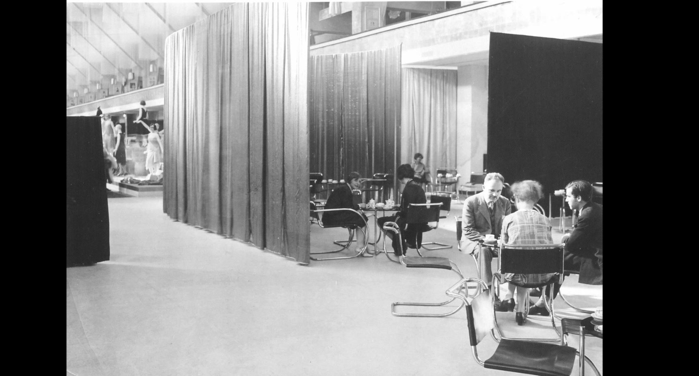
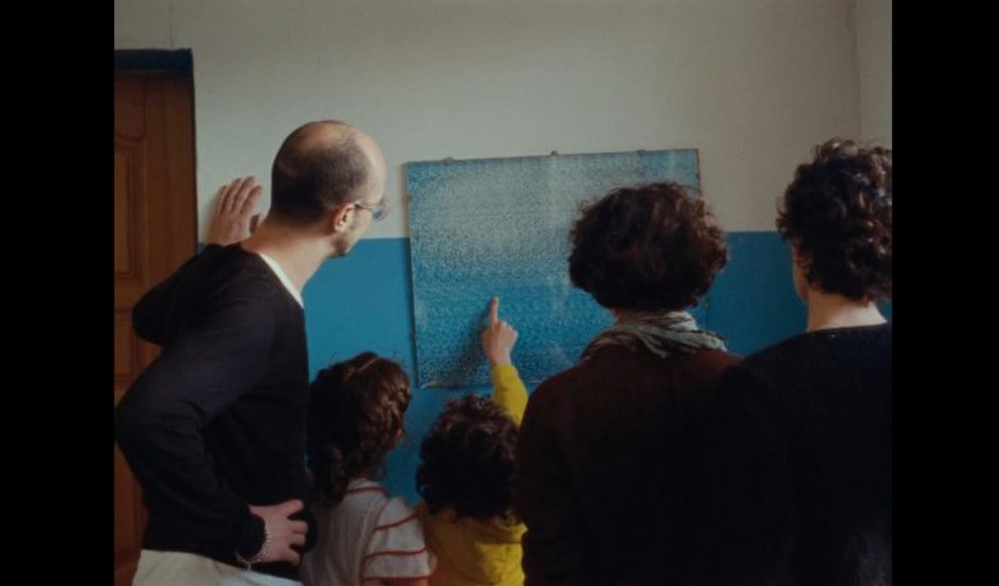
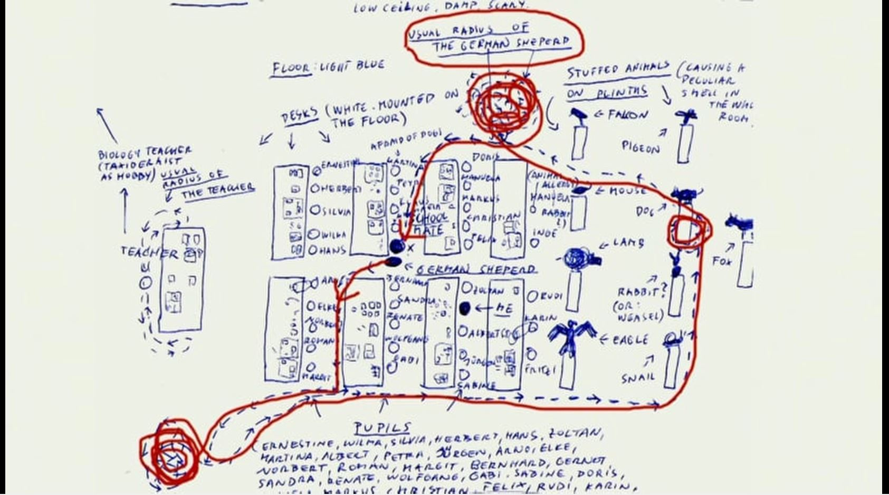
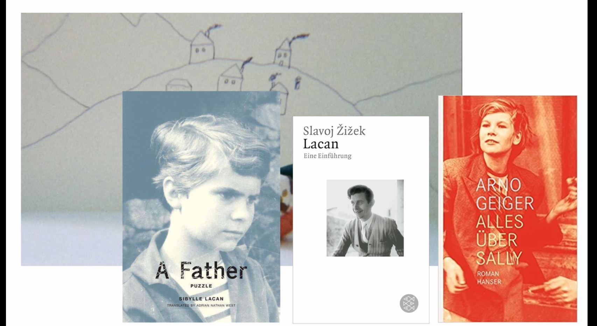
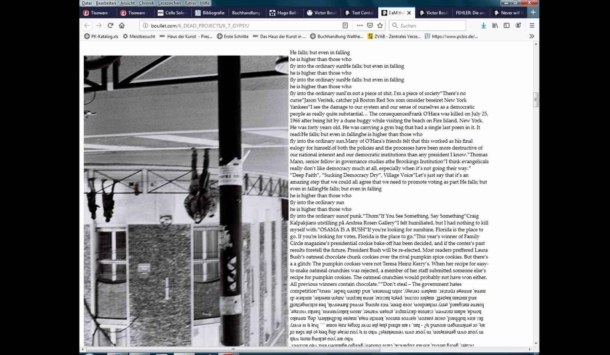
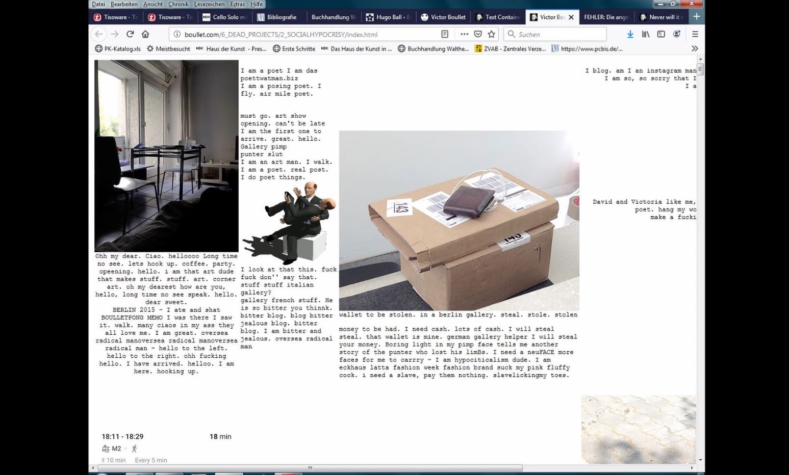
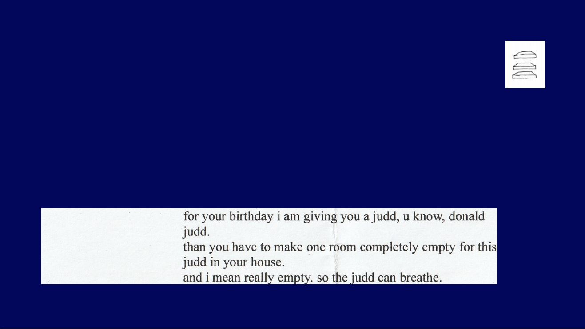

CARPET OF OBSESSIONS
(10 MONTHS)
January 2020
carpet of obsessions is about the books I read, the music I listened to, the things I thought about, the people I was a fan of and the drawings I drew.
it was not only a coming together of all of these things but also a talking and telling about them by me.
I entered the room and sat on one of two tables. There was a laptop, beamer, soundsystem and on the second table books and drawings. Behind me the powerpoint.
It started with Lilly Reich, an interior designer and exhibition maker in the 1920s and how looking at her exhibitions influenced my drawings, which followed afterwards.
I also showed texts I wrote, which are linked to the very end of the powerpoint: the websites by Victor Boullet, an artist from Oslo, whose writings and websites are so performative.I love them so much.
While the CD covers (Solange, Erykah Badu, Saada Bonaire, The Flowers) were shown I played one of the songs from the albums, it was the music I listened to at this particular time.
Then there are also the artists I liked at that time: Karin Mamma Anderson, Barbara Camilla Tucholski, Rosalind Nashashibi, Gernot Wieland etc.
I wrote a (fan)letter to Gernot Wieland, but refused or hesitated to read it out loud in the performance. I visited Gernot Wielands exhibition in Bremen and Salzburg (I went there only bc of him; I talked two times to him). I didn't want to only show my drawings but also the context and environment in which I draw them and in which state I was. It was like presenting a recherche, especially at the moment where I read out of the books on the left table.






